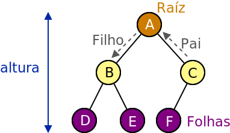
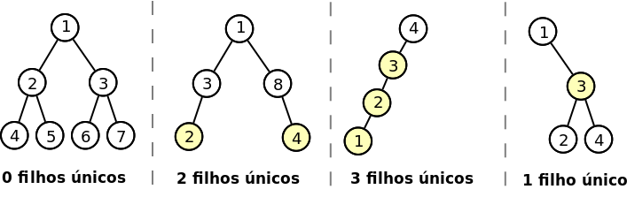
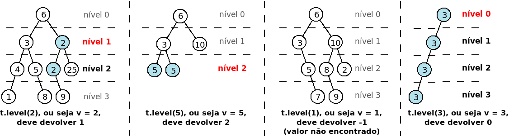

Neste problema deverá apenas submeter uma classe BTree<T> (e não um programa completo).
Código Base

O código base são as
classes de árvores binárias dadas nas aulas. Use como base a classe
BTree<T>, que é a única que deverá submeter.
Métodos a Implementar
Deve acrescentar à classe dada os seguintes métodos (não modificando nenhum dos métodos já existentes no código base):
- public int count() (50% da cotação)
Deve devolver a quantidade de nós que são filhos únicos. Um filho único é um nó que é o único filho de um outro nó (ou seja, não tem nós irmãos). Contar o número de filhos únicos é equivalente a contar o número de nós com apenas um filho. A figura seguinte ilustra quatro árvores diferentes e o respectivo número de filhos únicos, indicados a amarelo.

- public int level(T v) (50% da cotação)
Deve devolver o nível de altura mais baixo (mais próximo da raíz) onde é possível encontrar um nó com valor v. Se o valor não for encontrado, o método deve devolver -1. A figura seguinte ilustra quatro possíveis árvores t, indicando a azul os nós com o valor v, a negrito os níveis contendo o valor, e a vermelho o nível mais baixo onde é possível encontrar um nó com esse valor.

Notas
- Pode submeter código com apenas um dos métodos implementados (para obter pontuação parcial).
- Pode implementar métodos auxiliares, se quiser.
- Para testar na sua máquina deve criar uma árvore. Pode ler uma árvore com número inteiros usando o método readIntTree da classe LibBTree (um exemplo foi dado nas aulas e está disponível na classe TestBTree).
- Em todos os casos de teste as árvores têm tamanho máximo de 100 nós.
Exemplos de Input/Output para o método count
Os exemplos correspondem às quatro árvores da figura.
| Árvore t em preorder |
Valor devolvido por t.count() |
| 1 2 4 N N 5 N N 3 6 N N 7 N N |
0 |
| 1 3 2 N N N 8 N 4 N N |
2 |
| 4 3 2 1 N N N N N |
3 |
| 1 N 3 2 N N 4 N N |
1 |
Exemplos de Input/Output para o método level
Os exemplos correspondem às quatro árvores da figura.
| Árvore t em preorder |
Chamada |
Valor devolvido |
| 6 3 4 1 N N N 5 N 8 N N 2 2 N 9 N N 25 N N |
t.level(2) |
1 |
| 6 3 5 N N 5 N N 10 N N |
t.level(5) |
2 |
| 6 3 N 5 N 7 N N 10 8 N 9 N N 2 N N |
t.level(1) |
-1 |
| 3 3 3 3 N N N N N |
t.level(3) |
0 |